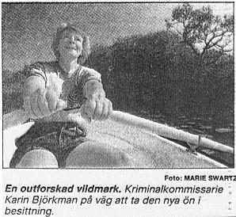
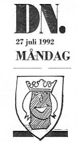

|

Polis intog okänd holme
DET FINNS EN VIT FLÄCK på Stockholms karta. En holme som ingen mänsklig fot beträtt.
Åtminstone inte sommartid. I år. Denna outforskade plats ligger helt centralt, men har ändå
varit okänd fram till nu.
För ett par dagar sedan gjordes det första landstigningsförsöket. En kvinnlig kriminalkommissarie, Karin Björkman, åtog sig det vanskliga uppdraget. Utan vare sig djungelkniv
eller elefantstudsare satte hon sig i en liten jolle och försökte inta holmen från öppet vatten.
Att det var just Karin Björkman som skulle bli först med att sätta sina fötter på holmen, har
sin naturliga förklaring. Hon har hållit den vita fläcken under uppsikt från sitt köksfönster i
flera år och hon känner till de vilda farvattnen mellan Tanto och Årsta holmar. Hon är
dessutom en av eldsjälarna i Föreningen Tantofolket som har i uppdrag att sköta om Årsta
holmar.
Det är alltså vid de tre historiskt kända platserna, Ahlholmen, Lillholmen och Bergholmen,
som den nya skapelsen skett. Nytillskottets födelse har tagit lång tid. Värkarna
började under 1800-talet och födseln har pågått under 1900-talet, som Karin Björkmans
upptäcktsresandekamrat Rune Sahlström beskriver det.
|
|

Den nya namnlösa holmen har vuxit upp kring en stor sten som finns i det täta gungflyet vid
Årstabron. Århundradens landhöjning och avslamning har gjort att den vuxit i storlek så pass att
den i dag kan kallas för holme.
FÖRENINGEN TANTOFOLKET hade planerat att göra en botanisk förteckning över växtligheten på
den vita fläcken. Undersökningar av grannholmarna har avslöjat både monstruösa snödroppar
och en unik sälgart. Men därav blev intet. Karin Björkmans landstigningsförsök stoppades av det
slingrande långa grenverket på holmens stolthet, en vid vide, och Rune Sahlström fick aldrig
någon möjlighet att fästa sin hemgjorda skylt med en vädjan på svenska och engelska att
undvika landstigning på holmen.
Rune Sahlström tänker nu erövra den nya holmen bakvägen om vadarstövlarna räcker. Han är
fast övertygad om att landshövding Ulf Adelsohn ska godkänna den vita fläcken som en fjärde
Årstaholme till hösten och att hela området ska förklaras som naturvårdsområde. Borgarrådet
Carl-Erik Skärman lär i så fall ha lovat att förrätta dop på plats och ställe.
BENGT LINDSTRÖM
|